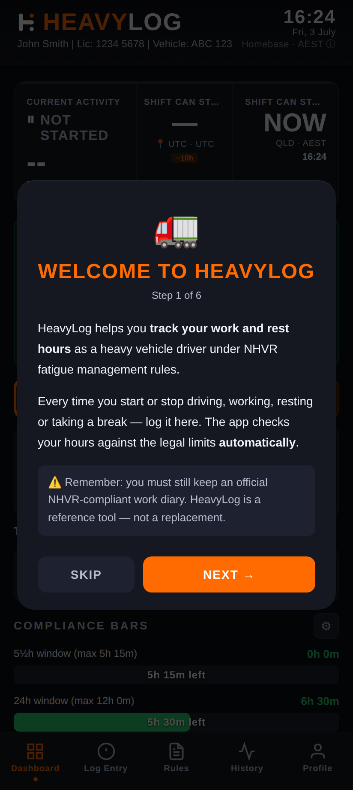
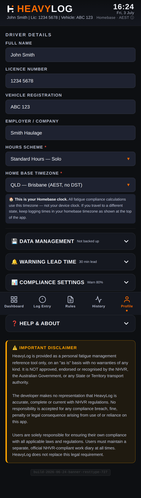
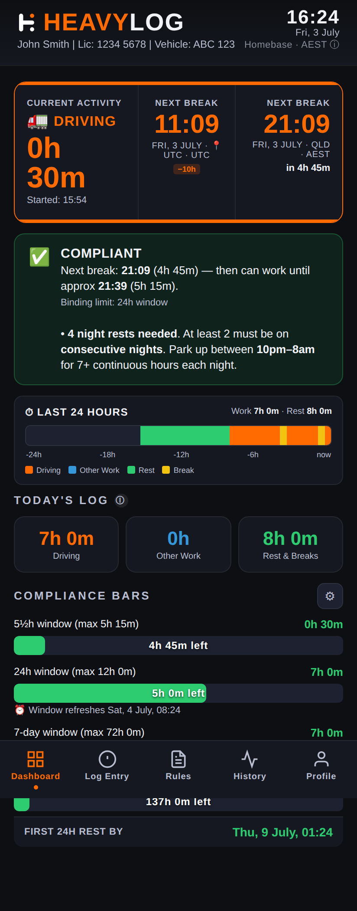
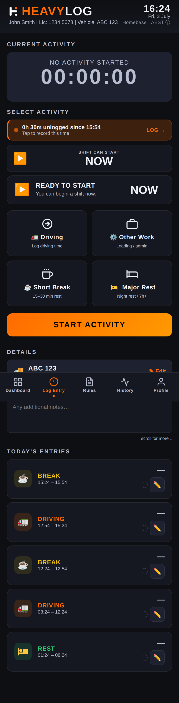
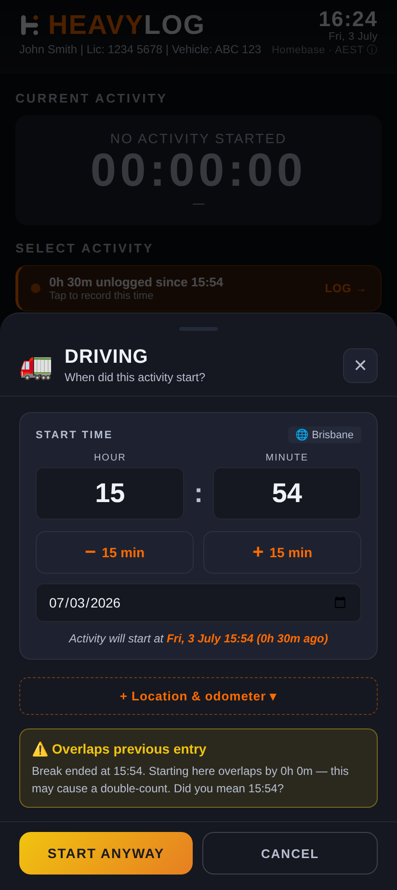
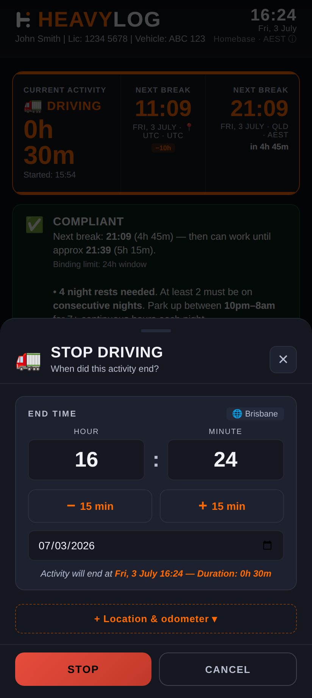
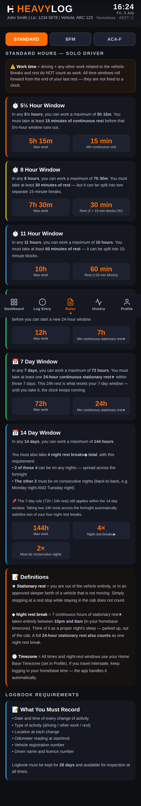
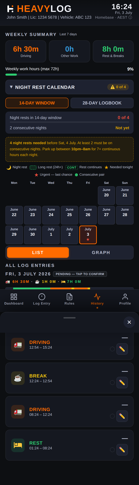

HeavyLog is a personal reference tool only. It is not approved, endorsed or recognised by the National Heavy Vehicle Regulator (NHVR), the Australian Government, any State or Territory transport authority, or any other government agency.
HeavyLog does not replace your legal obligation to maintain a compliant work diary or logbook as required under the Heavy Vehicle National Law (HVNL) and NHVR regulations.
1. Introduction
HeavyLog is a personal fatigue management reference tool designed for Australian heavy vehicle drivers. It helps you informally track your work and rest activities against NHVR fatigue guidelines, including both Standard Hours and Basic Fatigue Management (BFM) schemes.
The app records exact timestamps for all activities, calculates your remaining work and rest obligations in real time, and provides clear visual alerts when you are approaching or exceeding fatigue limits.
Key Features
- Real-time fatigue dashboard with colour-coded status cards
- Support for both Standard Hours and BFM fatigue schemes
- Exact timestamp recording for all work and rest activities
- Automatic calculation of remaining work time across multiple rolling windows
- Break and rest countdowns with clear visual warnings
- GPS location capture for log entries (tap to use)
- CSV export and import of your complete activity log
- Fully offline — no internet connection, account or login required
- All data stored locally on your device only
2. Getting Started
2.1 Installing HeavyLog
- Open the Google Play Store on your Android device.
- Search for HeavyLog.
- Tap Install and wait for the download to complete.
- Open the app. No account or registration is needed.
2.2 Getting Started Walkthrough
When you first open HeavyLog, a 4-step walkthrough guides you through the key concepts: what HeavyLog does, how the compliance bars work, the most important fatigue rules, and how to get started.

2.3 Setting Up Your Profile
Before you start logging activities, set up your driver profile in the Profile tab:

| Field | Description |
|---|---|
| Full Name | Your full name as it appears on your licence |
| Licence Number | Your heavy vehicle licence number |
| Vehicle Registration | Registration number of your primary vehicle |
| Employer / Company | The company you drive for (or your business name) |
| Hours Scheme | Choose Standard Hours or BFM |
| Home Base Timezone | Your home base timezone for fatigue calculations |
| Warning Threshold | Percentage at which amber warnings appear (default 80%) |
| 14-Day Rest Enforcement | Grace mode (default) suppresses the 14-day rest breach until 72h of work is logged, to avoid false alarms on a fresh install. Strict mode enforces from the first entry for full NHVR compliance. |
3. The Dashboard
The Dashboard is your main screen. It shows your current fatigue status at a glance with colour-coded cards that update in real time.

3.1 Fatigue Meter
The circular gauge at the top shows your overall fatigue usage as a percentage. It changes colour as you approach limits: green when safe, amber when approaching, and red when exceeded.
Next to the gauge, key statistics show your work time in the short window, 24-hour window, 7-day window, and when your next break is due.
3.2 Alert Banner
Below the fatigue meter, an alert banner shows your overall compliance status:
- COMPLIANT (green) — All fatigue limits within safe range
- APPROACHING LIMITS (yellow) — One or more windows approaching a limit. Plan your rest soon.
- FATIGUE BREACH (red) — A limit has been exceeded. Stop work and take required rest.
3.3 Today’s Log Summary
Three summary cards show your total Driving, Other Work, and Rest hours for the current day.
3.4 Compliance Bars
Horizontal progress bars show your usage percentage across each fatigue window (5½h, 24h, 7-day, 14-day). Bars change from green to yellow to red as you approach limits.
↑ Back to top4. Logging Activities
4.1 Activity Types
| Activity | Description | Counts As |
|---|---|---|
| Driving | Time spent driving the heavy vehicle | Work |
| Other Work | Non-driving tasks (loading, paperwork, checks) | Work |
| Short Break | Short rest breaks during a shift (15–30 min) | Rest |
| Major Rest | Continuous rest period (night rest, 7h+) | Rest |
4.2 Selecting and Starting an Activity
From the Log Entry tab, select the activity type you want to start, then tap the orange START ACTIVITY button.

4.3 Setting the Start Time
After tapping START ACTIVITY, a modal appears where you can set the exact start time. The app defaults to the current time, but you can adjust the hour, minute and date to log a past activity.
The modal also shows any approaching fatigue limits so you can make an informed decision before starting work.

4.4 Stopping an Activity & Entering Details
When you finish an activity, tap STOP. You will be prompted to enter:
- Location — Tap 📍 to auto-fill GPS, or type manually
- Vehicle Rego / Fleet No. — Pre-filled from your profile
- Odometer (km) — Current reading
- Trailer No. — Pre-filled from your profile
- Note — Any additional notes

4.5 GPS Location
When you tap the locate button, HeavyLog requests your device’s GPS and fills in the location field:
- Location is only accessed when you explicitly tap the button — never in the background
- GPS coordinates are stored as text in your log entry only
- No location data is ever transmitted to any server
- You can deny the permission and type locations manually
5. Fatigue Rules Reference
The Rules tab provides a built-in reference for NHVR fatigue rules. Switch between Standard Hours and BFM using the tabs at the top.

5.1 Standard Hours
| Rule | Limit | Required Rest |
|---|---|---|
| 5½h window | 5h 15m work | 15 min continuous rest |
| 8h window | 7h 30m work | 30 min rest (in 15-min blocks) |
| 11h window | 10h work | 60 min rest (in 15-min blocks) |
| 24h window | 12h work | Remaining time as rest |
| 7-day rest | Unconditional | 24h continuous rest every 7 days |
5.2 Basic Fatigue Management (BFM)
| Rule | Limit | Required Rest |
|---|---|---|
| 6¼h window | 6h work | 30 min continuous rest |
| 9h window | 8h work | Remaining time as rest |
| 12h window | 11h work | Remaining time as rest |
| 24h window | 14h work | Remaining time as rest |
| Major rest | 7h continuous | Qualifies as major rest |
| 84h cumulative | 84h since last 24h rest | 24h continuous rest required |
5.3 How HeavyLog Calculates
HeavyLog uses exact timestamps (not 15-minute block rounding) for all calculations. The 15-minute rounding rule under NHVR only applies to handwritten work diaries — electronic systems record and calculate with precise times.
The app continuously scans rolling time windows to determine how much work and rest you have accumulated. When a window approaches its limit, the dashboard card changes colour and the alert banner updates.
↑ Back to top6. History
The History tab shows your complete log of recorded activities, grouped by date.

6.1 Weekly Summary
At the top, three summary cards show your total Driving, Work and Rest hours for the current week, along with a progress bar for weekly work hours against the maximum.
6.2 Browsing and Editing Entries
Entries are listed in reverse chronological order. Each shows the activity icon, type, times, location, vehicle rego, trailer number and duration. Tap the pencil icon to edit an entry.
Changes to past entries will cause the dashboard to recalculate your fatigue status automatically.
↑ Back to top7. Exporting & Importing Data
7.1 Exporting Your Log (CSV)
- Go to the Profile tab.
- Tap EXPORT LOGBOOK.
- The CSV file will be saved to your device. Share it via email, cloud storage or any other method.
The exported CSV includes: activity type, start/end times, duration, location, odometer, vehicle rego, fleet number, trailer number, notes, and driver details.
7.2 Importing a Log (CSV)
- Go to the Profile tab.
- Tap IMPORT LOGBOOK (CSV).
- Select the CSV file from your device.
- HeavyLog will map the columns and import the entries into your log.
7.3 Clearing All Data
The CLEAR ALL DATA button in the Profile tab permanently deletes all log entries, profile information and settings. This action cannot be undone.
7.4 Replaying the Getting Started Guide
If you need a refresher on how HeavyLog works, tap the VIEW GETTING STARTED GUIDE button at the bottom of the Profile tab. This replays the 4-step walkthrough that appears on first launch.
↑ Back to top8. Tips & Best Practices
8.1 Keep Your Log Accurate
Log every activity as it happens. Starting and stopping activities promptly ensures your fatigue calculations are accurate.
8.2 Export Regularly
Make a habit of exporting your log at least weekly. The CSV serves as your backup and can be useful for cross-referencing with your official work diary.
8.3 Monitor Dashboard Alerts
Pay attention to amber/yellow warnings. They give advance notice so you can plan your next rest before hitting a red limit.
8.4 Check Rest Countdowns
When on a break or rest period, the dashboard shows exactly how much rest you still need before you can resume work.
8.5 Keep Your Device Secure
All data is stored on your device, so security depends on your device. Use a screen lock, keep your OS updated, and don’t share your device with untrusted persons.
8.6 Remember Your Legal Obligations
HeavyLog is a personal reference tool. It does not replace your legal obligation to maintain an official NHVR-compliant work diary.
↑ Back to top9. Troubleshooting
9.1 Dashboard Shows Unexpected Alerts
Check your recent entries in History. A missed stop, overlapping entry or incorrect time can affect calculations. Edit the incorrect entry and the dashboard will recalculate.
9.2 GPS Location Not Working
Ensure you’ve granted location permission: Settings > Apps > HeavyLog > Permissions. Also check your device’s location services (GPS) are turned on.
9.3 Data Lost After Reinstall
Uninstalling removes all locally stored data. This is why regular CSV exports are essential. Use Import to restore from a previous export.
9.4 CSV Import Errors
Ensure the file matches HeavyLog’s export format. Common issues: modified headers, wrong date formats, or extra columns added by spreadsheet software.
↑ Back to top10. Data & Privacy
- All data stored locally on your device only — nothing is uploaded
- No account, login or registration required
- No analytics, crash reports or advertising identifiers collected
- GPS location only accessed when you tap the locate button
- The app operates entirely offline
For full details, see the HeavyLog Privacy Policy.
↑ Back to top11. Legal Notices
Disclaimer: HeavyLog is provided as a personal reference tool only, on an “as is” basis with no warranties of any kind. It is not approved, endorsed or recognised by the NHVR, the Australian Government, or any State or Territory transport authority.
We make no representation that HeavyLog is accurate, complete or current with NHVR regulations. We accept no responsibility for any compliance breach, fine, penalty or legal consequence arising from use of or reliance on this app.
Users are solely responsible for ensuring their own compliance with all applicable laws and regulations, including maintaining an official NHVR-compliant work diary.
↑ Back to top12. Support & Contact
If you have any questions, found a bug, or want to suggest a feature, you can reach us at: